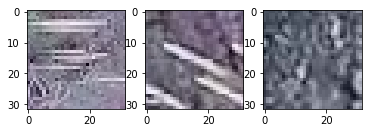
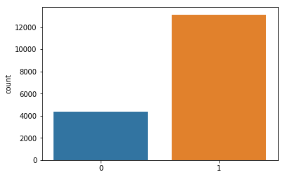
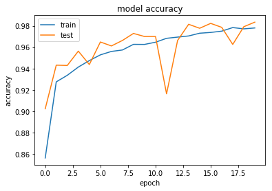
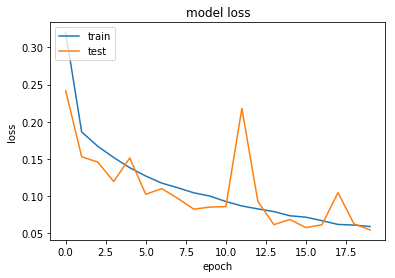
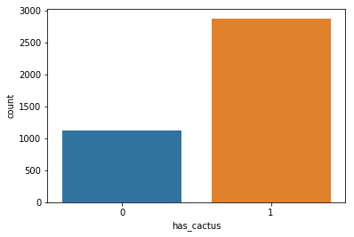

仙人掌识别
To assess the impact of climate change on Earth’s flora and fauna, it is vital to quantify how human activities such as logging, mining, and agriculture are impacting our protected natural areas. Researchers in Mexico have created the VIGIA project, which aims to build a system for autonomous surveillance of protected areas. A first step in such an effort is the ability to recognize the vegetation inside the protected areas. In this competition, you are tasked with creation of an algorithm that can identify a specific type of cactus in aerial imagery.
https://www.kaggle.com/c/aerial-cactus-identification
1 | # This Python 3 environment comes with many helpful analytics libraries installed |
['aerial-cactus-identification']
1 | from tqdm import tqdm, tqdm_notebook |
1 | from keras import layers |
imge 预处理
加载数据集
首先解压图片数据
1 | import zipfile |
1 | print(os.listdir("./")) |
['train', 'test', '__notebook_source__.ipynb']
1 | train_path = './train/' |
把图片转换为矩阵
1 | labels = [] |
HBox(children=(IntProgress(value=0, max=17500), HTML(value='')))
1 | labels[0:10] |
[array([1]),
array([1]),
array([1]),
array([1]),
array([1]),
array([1]),
array([0]),
array([0]),
array([1]),
array([1])]
画出图片观察一下，第1，2个图片有仙人掌，第7个图片没有。
1 | import matplotlib.pyplot as plt |

数值归一化
1 | images = np.asarray(images) |
1 | images.shape, labels.shape |
((17500, 32, 32, 3), (17500, 1))
画出有无仙人掌图片条形图
1 | sns.countplot(np.squeeze(labels)) |

构建模型
1 | # GRADED FUNCTION: identity_block |
1 | # GRADED FUNCTION: convolutional_block |
1 | # GRADED FUNCTION: ResNet50 |
1 | model = ResNet50() |
1 | model.summary() |
_________________________________________________________________
Layer (type) Output Shape Param #
=================================================================
conv2d_1 (Conv2D) (None, 30, 30, 32) 896
_________________________________________________________________
conv2d_2 (Conv2D) (None, 28, 28, 32) 9248
_________________________________________________________________
max_pooling2d_2 (MaxPooling2 (None, 14, 14, 32) 0
_________________________________________________________________
conv2d_3 (Conv2D) (None, 12, 12, 64) 18496
_________________________________________________________________
conv2d_4 (Conv2D) (None, 10, 10, 64) 36928
_________________________________________________________________
max_pooling2d_3 (MaxPooling2 (None, 5, 5, 64) 0
_________________________________________________________________
flatten_2 (Flatten) (None, 1600) 0
_________________________________________________________________
dense_1 (Dense) (None, 512) 819712
_________________________________________________________________
dense_2 (Dense) (None, 1) 513
=================================================================
Total params: 885,793
Trainable params: 885,793
Non-trainable params: 0
_________________________________________________________________
开始预测
1 | model.compile(loss='binary_crossentropy', |
1 | hist = model.fit(images, labels, |
Train on 14000 samples, validate on 3500 samples
Epoch 1/20
14000/14000 [==============================] - 4s 316us/step - loss: 0.3205 - acc: 0.8562 - val_loss: 0.2419 - val_acc: 0.9023
Epoch 2/20
14000/14000 [==============================] - 1s 74us/step - loss: 0.1864 - acc: 0.9275 - val_loss: 0.1531 - val_acc: 0.9431
Epoch 3/20
14000/14000 [==============================] - 1s 74us/step - loss: 0.1672 - acc: 0.9336 - val_loss: 0.1459 - val_acc: 0.9429
Epoch 4/20
14000/14000 [==============================] - 1s 74us/step - loss: 0.1520 - acc: 0.9414 - val_loss: 0.1198 - val_acc: 0.9563
Epoch 5/20
14000/14000 [==============================] - 1s 74us/step - loss: 0.1383 - acc: 0.9474 - val_loss: 0.1515 - val_acc: 0.9437
Epoch 6/20
14000/14000 [==============================] - 1s 75us/step - loss: 0.1271 - acc: 0.9528 - val_loss: 0.1026 - val_acc: 0.9649
Epoch 7/20
14000/14000 [==============================] - 1s 74us/step - loss: 0.1176 - acc: 0.9560 - val_loss: 0.1102 - val_acc: 0.9611
Epoch 8/20
14000/14000 [==============================] - 1s 76us/step - loss: 0.1113 - acc: 0.9574 - val_loss: 0.0971 - val_acc: 0.9663
Epoch 9/20
14000/14000 [==============================] - 1s 75us/step - loss: 0.1046 - acc: 0.9626 - val_loss: 0.0826 - val_acc: 0.9729
Epoch 10/20
14000/14000 [==============================] - 1s 75us/step - loss: 0.1002 - acc: 0.9626 - val_loss: 0.0854 - val_acc: 0.9700
Epoch 11/20
14000/14000 [==============================] - 1s 75us/step - loss: 0.0928 - acc: 0.9646 - val_loss: 0.0860 - val_acc: 0.9700
Epoch 12/20
14000/14000 [==============================] - 1s 75us/step - loss: 0.0869 - acc: 0.9683 - val_loss: 0.2181 - val_acc: 0.9163
Epoch 13/20
14000/14000 [==============================] - 1s 75us/step - loss: 0.0829 - acc: 0.9694 - val_loss: 0.0929 - val_acc: 0.9663
Epoch 14/20
14000/14000 [==============================] - 1s 75us/step - loss: 0.0793 - acc: 0.9705 - val_loss: 0.0618 - val_acc: 0.9814
Epoch 15/20
14000/14000 [==============================] - 1s 74us/step - loss: 0.0737 - acc: 0.9731 - val_loss: 0.0687 - val_acc: 0.9777
Epoch 16/20
14000/14000 [==============================] - 1s 74us/step - loss: 0.0718 - acc: 0.9738 - val_loss: 0.0578 - val_acc: 0.9823
Epoch 17/20
14000/14000 [==============================] - 1s 74us/step - loss: 0.0671 - acc: 0.9750 - val_loss: 0.0616 - val_acc: 0.9786
Epoch 18/20
14000/14000 [==============================] - 1s 74us/step - loss: 0.0620 - acc: 0.9784 - val_loss: 0.1049 - val_acc: 0.9626
Epoch 19/20
14000/14000 [==============================] - 1s 75us/step - loss: 0.0612 - acc: 0.9771 - val_loss: 0.0627 - val_acc: 0.9791
Epoch 20/20
14000/14000 [==============================] - 1s 74us/step - loss: 0.0592 - acc: 0.9780 - val_loss: 0.0547 - val_acc: 0.9834
1 | hist.history.keys() |
dict_keys(['val_loss', 'val_acc', 'loss', 'acc'])
1 | import matplotlib.pyplot as plt |


预测
1 | test = [] |
1 | test_predictions = model.predict(test) |
1 | sub_df = pd.DataFrame(test_predictions, columns=['has_cactus']) |
1 | sns.countplot(sub_df['has_cactus']) |

1 | sub_df.to_csv('submission.csv',index=False) |
得分
Public Score
0.9583
简单的模型
1 | #model |